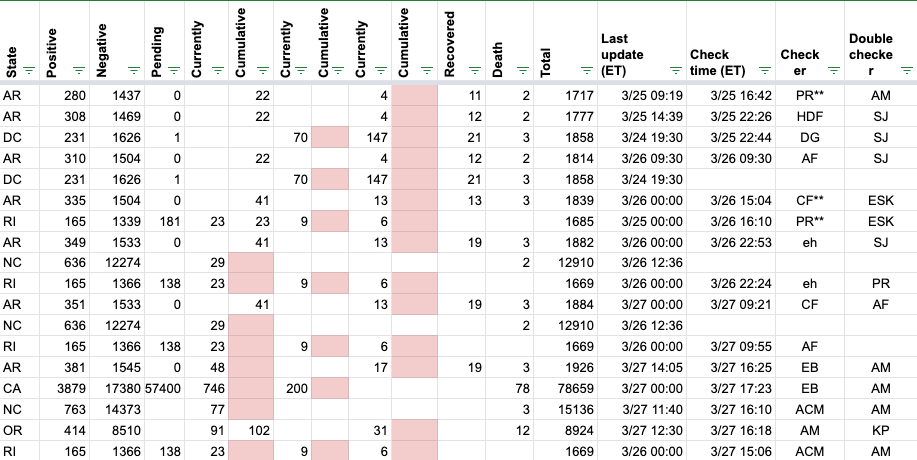
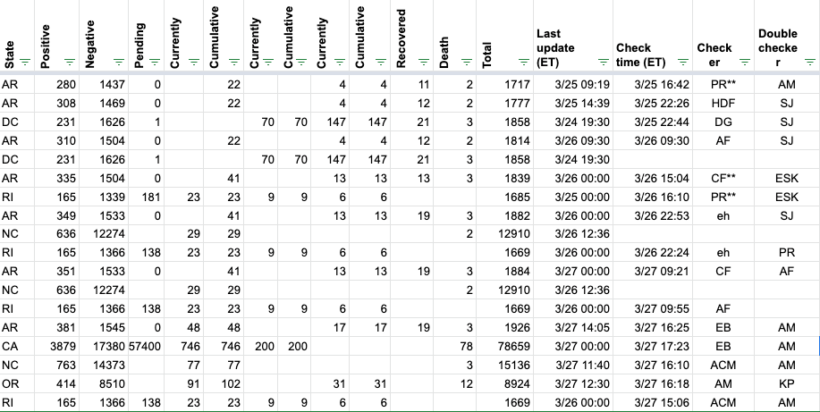
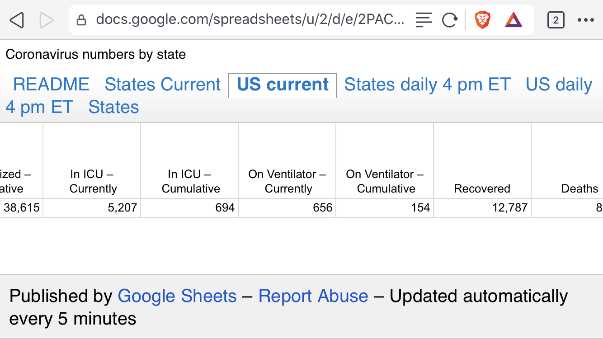
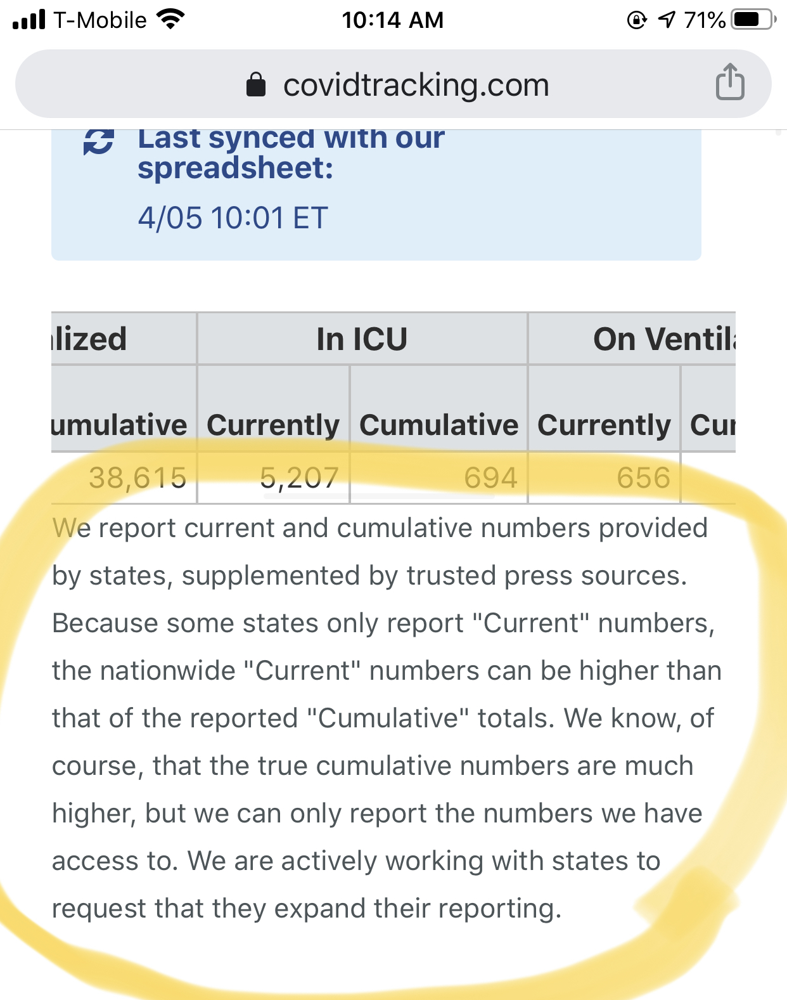

"Cumulative" numbers should be greater than or equal to "current" numbers
When a state provides a “Currently” (hospitalized, in ICU, on ventilator) number but not a “Cumulative” number, we should add a value in “Cumulative” equal to the “Currently” value, as it is implied.
After splitting out these values a couple of days ago, we haven’t always done this. Our website currently only shows “Cumulative” hospitalized (this will change when we add all the new outcomes data in the next few days). So, while the daily values were accounting for a MAX() between current and cumulative (and weren’t affected), the “current data” for hospitalization values is low.
Backfilling the data to add values in Cumulative for any places where Cumulative < Current.
Affected rows (data filtered to show only these rows)

After backfill/update: 
Has this been fixed? Shouldn’t the cumulative numbers in this screenshot be higher than the currently numbers? Correct my ignorance if I’m wrong.

@wboka please see #132
We reverted the changes originally made. We are still figuring out how to resolve the display of sums on the website but cumulative numbers are not always reported by states, and we aren’t comfortable using “current” numbers as “cumulative”.
Please see the note currently displayed on the site: 
Correction: we will be reverting the changes originally made. In recent days, we’ve been reporting current/cumulative numbers exactly as reported by the states. Some of the early numbers counted “current” numbers as “cumulative” as shown in screenshots above — this will be reverted.
This has been rectified